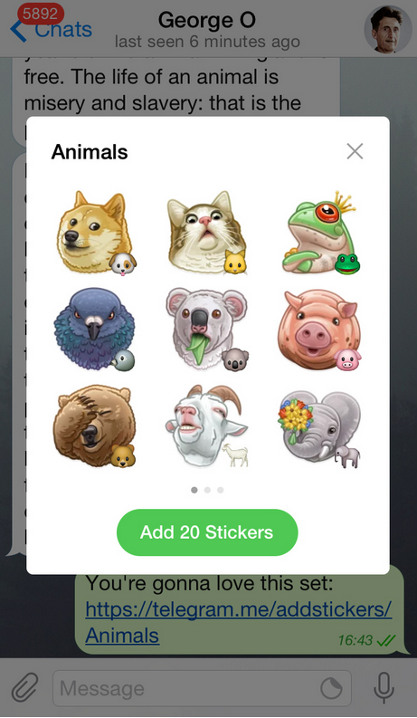
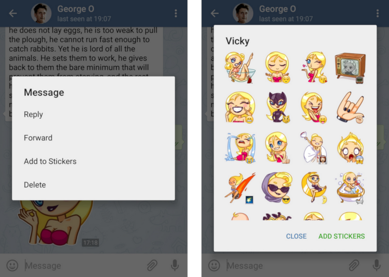
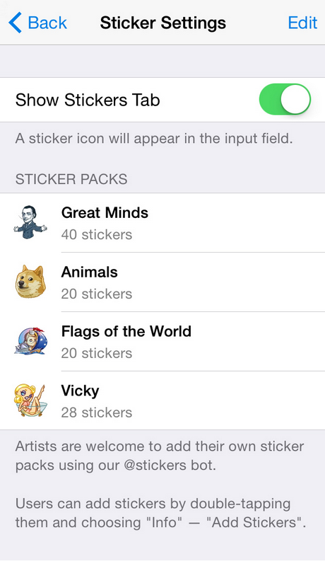

首頁 >
官方新聞 > 自訂的貼圖集（原文）（最新手機版中文化檔案）
從今天開始，畫家可以通過 Telegram 的 @Stickers 機器人提交他們自訂的貼圖集。每個貼圖集取得一個永久連結，所以用戶可以輕鬆地加入新的貼圖，並與朋友分享。
這使得全世界的畫家可以發揮他們的創意，並幫助 Telegram 用戶自訂他們的體驗。我們的內部畫家（負責這個部落格的平面藝術）建立了一個「動物」的貼圖集作為範本。如果您已經安裝和更新 Telegram，這個連結將開啟該貼圖集：https://telegram.me/addstickers/Animals 。

獨立設計師已經開始提交他們的貼圖集，而我們注意到貼圖，例如「Flags of the World」或「Vicky」已上傳到@Stickers Bot 之中。
分享貼圖
傳送連結不是分享貼圖集的唯一途徑。當您收到一張貼圖，那是您目前還沒有安裝的貼圖集中的一張，只需點擊它並選擇「加入到貼圖」（iOS上的 " 資訊 "）來預覽，並加入一整套貼圖。

當您加入了一貼圖集，它的貼圖就可以透過「表情符號」或「貼圖專用面板」來使用。iOS應用程式現在也有一個了 - 您可以在聊天設定中的「貼圖」裡手動開啟/關閉它。
新的貼圖選單允許您查看，解除安裝和分享您的貼圖集。

這次更新適用於 Android 和 iOS 版本，及很快地新功能也將加入到其他應用程式中。在 Telegram 上的貼圖集，現在完全有能力以病毒式擴散方式傳播和吞噬世界。
Telegram 團隊，
2015年5月19日